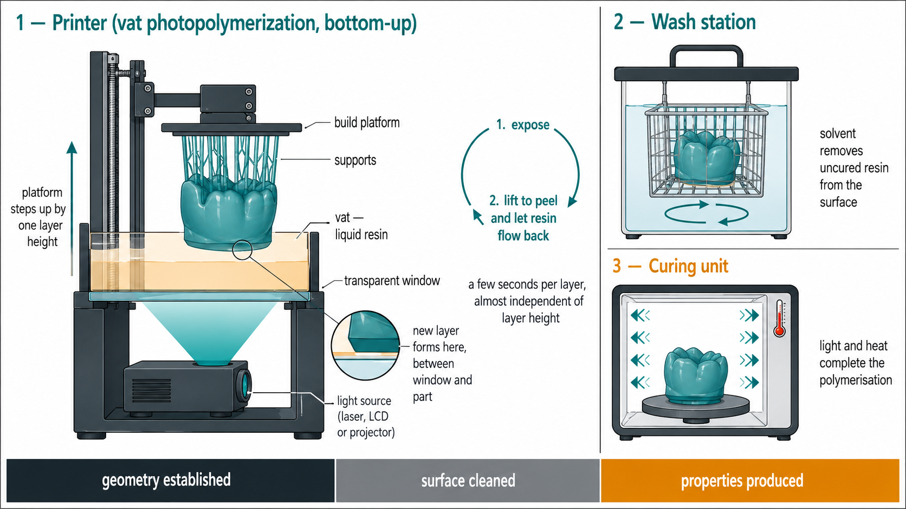
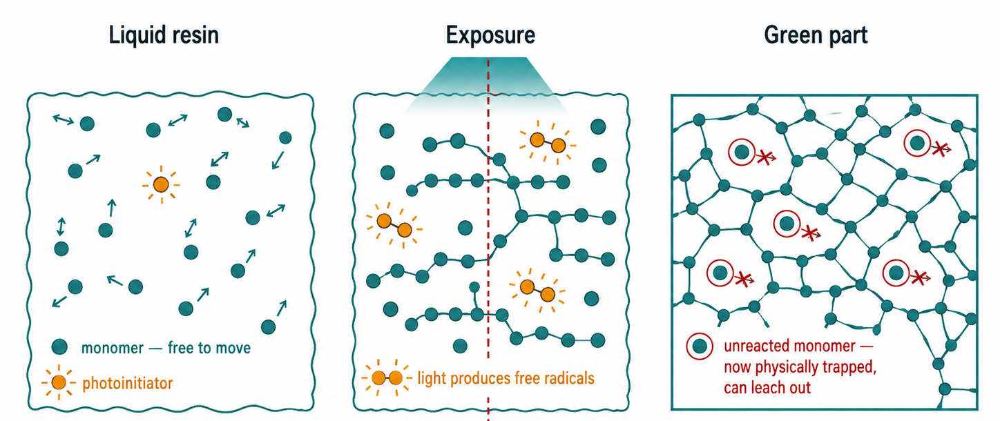
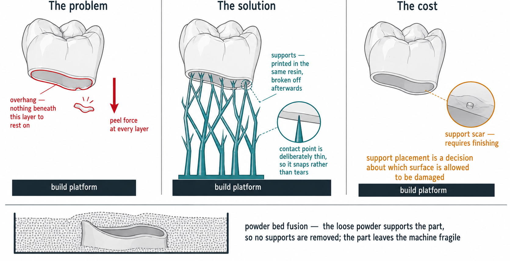
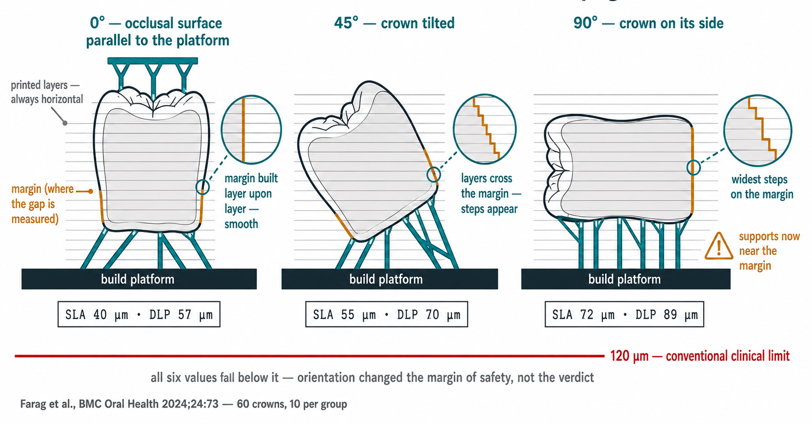

What additive manufacturing is, how a dental object is produced step by step, which systems exist, and what the process can and cannot do.
Context · industrial scale
Additive manufacturing at industrial scale
Align Technology reports producing more than one million custom orthodontic appliances per day, which it describes as the largest 3D printing operation in the world.
>1,000,000
custom appliances printed per day
3
facilities: Mexico, China, Poland
0
units held as stock; every one is patient-specific
Why this is possibleEach appliance is produced from an individual patient scan rather than from a production batch. In a moulded or milled workflow, every new geometry requires new tooling or a new blank; in additive manufacturing it requires only a different file. Customisation carries no tooling penalty — this is the defining economic property of the process.
Important qualificationThe aligner itself is not printed. The model is printed; the aligner is thermoformed over it and trimmed off, and the model is discarded. Most additive manufacturing in orthodontics is therefore the production of disposable tooling rather than of the definitive device.
Srini Kaza (EVP R&D, Align), Orthodontic Products, Jul 2025. Align acquired Cubicure (Vienna) in Jan 2024 to move towards directly printed appliances; the first product of that route was the Invisalign Palatal Expander (FDA clearance Dec 2023).
FIG. The printed object is the model — a tool that must survive one thermoforming cycle, minutes. The aligner is worn for 1–2 weeks; a definitive crown must resist years of fatigue, wear and hydrolysis. Property requirements scale with required service life.
Question to carry through the lectureFor each application: is the printed object the product or the tool?
Context · clinical applications
What is printed in dentistry today
Three tiers, ordered by the strength of the evidence supporting them rather than by how often they are advertised.
RoutineStudy and working models · custom impression trays · provisional crowns and bridges · occlusal splints · surgical guides. Comparative studies support these, and they are the ordinary daily output of a digital laboratory. Most of them are tools rather than devices worn by the patient.
EmergingComplete denture bases and teeth · removable partial denture frameworks in Co-Cr. Fit is comparable to conventional methods, but printed denture resins remain mechanically inferior to milled and heat-cured ones, and colour and dimensional stability fall over time.
ExperimentalDefinitive crowns · printed zirconia · printed implants · bioprinting. Evidence is in vitro, animal or single-case. No clinical survival data exist for printed definitive restorations.
Jun M-K et al., Oral 2025;5(2):24 (scoping review; the great majority of included studies are in vitro). Alyami MH, Cureus 2024;16(9):e68501.
FIG. The evidence axis runs opposite to the tiers: the most ambitious applications are supported by the weakest evidence.
Context · where printing happens
Where printing happens, what it costs, how long it takes
InterpretationAdoption rose from about 10% to 57% in eight years, unevenly: 97% of large laboratories against 34% of small ones. Milling did not decline — it rose from 39% to 67% over the same period. The two are complementary, and milling means carving the object out of a solid block with a rotating bur.
Key Group, 2022 US Dental Laboratory report.
Who operates the equipmentAbout 84% of this work is done in the laboratory, not in the surgery. The dentist supplies the scan and the prescription; the technician makes the orientation, support and post-processing decisions that this lecture is about. Chairside printing exists and is growing, but it is not yet the ordinary case.
Equipment
Cost band
Desktop LCD / mSLA printer + wash and cure units
$
Professional dental DLP / SLA system
$$
Chairside milling unit
$$$
Metal powder bed fusion (SLM / DMLS)
$$$$
Each additional symbol is approximately one order of magnitude. For an anchor in equipment already familiar: the $ band is of the order of a curing light or a small autoclave; the $$$$ band is of the order of a CBCT unit. Absolute prices are omitted deliberately — they vary by market and date faster than a lecture can track.
Practical consequenceA full-arch model at 100 µm layers is roughly 300 layers, about 35 minutes of build time, followed by washing in minutes and post-curing in tens of minutes. Halving the layer height doubles the build but not the post-processing.
Learning outcomes
Learning outcomes
1
Explain the basic principles of 3D printing — layer-by-layer fabrication and the steps from digital design to a finished dental object.
2
Identify the main technologies used to fabricate dental prosthetic and surgical devices.
3
Recognise the applications, advantages and limitations of 3D printing in prosthodontics and dental surgery.
Organising principle. In additive manufacturing the object and its properties are formed in the same operation. The processing route therefore determines clinical behaviour to a degree comparable with the choice of material itself — which is why this hour is arranged along structure → property → performance rather than by device.
StructureParts 1–3
→
PropertyPart 4
→
PerformancePart 5
PART 01 · structureWhat additive manufacturing isISO/ASTM 52900; single-step vs multi-step; slicing and the staircase effect.
PART 02 · structureFrom file to objectThe six process stages, and the build-orientation decision.
PART 03 · structureThe technologiesFive process families; the four optical routes; sintering vs melting.
PART 04 · propertyWhere properties are writtenGreen part, gel point, washing and post-curing, oxygen inhibition.
PART 05 · performanceFailures and the patientFailure modes, support placement, accuracy, clinical maturity.
Part 1 of 5
01
What 3D printing is, and how it is done
The equipment· The six stages· The resin· Supports· Additive vs subtractive
Structure · the equipment
The equipment: printer, wash station, curing unit
Vat photopolymerization — the family used for almost all dental resin printing — requires three machines, not one.
Vat photopolymerization
A vat (tank) holds liquid resin. A light source below or above it hardens the resin in the shape of one cross-section. A build platform holds the growing object and steps away from the light by one layer height after each exposure, so the object is built up out of the liquid.
MechanismIn the common bottom-up arrangement the light comes from beneath a transparent window, and the new layer forms between the window and the part. After each layer the platform lifts to peel the part off the window and let fresh resin flow underneath, then lowers again. That peel-and-refill cycle is why each layer costs a fixed few seconds regardless of how thin it is.
Important qualificationWhat comes off the platform is not the finished device. It is coated in uncured resin and only partly reacted. It goes to the wash station (solvent, to remove liquid resin from the surface) and then to the curing unit (light, often with heat, to complete the reaction). Part 4 of this lecture is about that sequence.

FIG. Three machines, in sequence: the printer establishes the geometry; the wash station removes surface resin; the curing unit produces the final properties.
Structure · the process
The six stages, from scan to finished device
Data acquisition
An intraoral scan, a laboratory scan of a cast, or a CBCT. This fixes the geometry that everything downstream will reproduce.
CAD design
The restoration or appliance is designed on that geometry and exported, usually as an STL file — a description of the outer surface as a mesh of triangles.
Print preparation
The object is oriented on the build platform, supports are added, and the volume is sliced into layers. This stage has no equivalent in milling.
Layer-by-layer build
The printer produces one cross-section at a time. Hours in the machine, unattended.
Post-processing
Wash, remove supports, post-cure. The material properties are produced here.
Finished device
Finishing and polishing, then delivery.
FIG. The upper band is the decision taken at each stage; the lower band is the material property that decision determines.
NoteStage 3 is where a file is committed to one particular physical realisation. The same file, prepared differently, gives a different object — which is the subject of Part 5.
Structure · the material
What the resin is, and what light does to it
The liquid in the vat
A mixture of monomers (small molecules, mostly methacrylates and urethane acrylates), a photoinitiator that absorbs light and produces free radicals, and usually fillers and pigments. It is the same chemistry as the resin composite introduced in Lecture 03, formulated to be liquid enough to flow back under the part after each layer.
Light strikes the photoinitiator, which produces free radicals. Radicals open the double bonds of the monomers, and chains grow and link to one another into a network.
As the network forms, the liquid stops flowing and becomes a solid. That transition is the gel point. It occurs while a large fraction of the monomer is still unreacted.
After the gel point the network itself restricts movement. Monomer molecules that have not yet reacted become physically trapped and can no longer reach a growing chain end.
Degree of conversion
The percentage of the original double bonds that have reacted. It is never 100%. In a printed part it is roughly half when the object leaves the printer, and rises during post-curing.

FIG. The gel point arrives long before the reaction is complete. Conversion is about 46% in the part as printed and about 70% after post-curing; 100% is never reached.
Clinical significanceUnreacted monomer can leach out of the device into saliva and tissue, and is cytotoxic. Washing removes what is on the surface; post-curing converts part of what is inside. Neither reaches 100%.
Structure · print preparation
Support structures
Support
A thin sacrificial pillar, printed in the same resin, that connects an unsupported region of the object to the build platform. It is broken off after printing.
Why they are needed. Each layer must rest on something. A surface that overhangs the layer below it has nothing to adhere to, and in a bottom-up printer the peel force at every layer would tear it away.
What they cost. Where a support meets the object it leaves a small scar — a nub of material and a local defect in the surface. Removing it requires finishing.
The consequence. Support placement is therefore a decision about which surface is allowed to be damaged.
Practical consequenceOrientation and supports are decided together at stage 3. Choosing an orientation that reduces the staircase on one surface usually moves the supports onto another.

FIG. The support holds the overhang during the build and leaves a scar where it touched.
Structure · definitions
Single-step and multi-step processes
Additive manufacturing
"Process of joining materials to make objects from 3D model data, usually layer by layer, as opposed to subtractive manufacturing methods." ISO/ASTM 52900
The same standard draws a second distinction, which carries most of the clinical consequence:
Single-step
Shape and basic material properties are achieved in one operation.
What comes off the machine is what you have.
Multi-step
Shape is achieved first. Properties are achieved later, in a separate operation.
Resin printing is multi-step: the part leaves the printer only about half reacted and is finished at the bench. Metal and zirconia printing are also multi-step, for the same reason in a different chemistry.
FIG. At the moment the geometry is complete, the milled crown already has its properties; the printed crown has less than half. Degree of conversion is about 46% in the part as printed and about 70% after post-curing.
Clinical significanceA milled crown is machined from a blank whose properties were established industrially; those properties are inherited unchanged. A printed crown acquires its final properties during post-processing at the bench, and therefore depends on the wash and cure protocol actually used.
Structure · comparison of manufacturing routes
Additive and subtractive manufacturing compared
Advantages of the additive route
Geometric freedom — undercuts, internal channels, lattices; no tool has to reach the surface.
No tool radius — milling cannot cut a groove narrower than the bur, and internal corners are rounded by definition.
Nesting — dozens of parts per platform; the marginal cost of complexity is near zero.
Waste — a zirconia blank mostly becomes dust.
Advantages of the subtractive route
Industrially processed material — the blank was polymerised or sintered under controlled conditions, at temperatures and pressures a laboratory bench cannot reach.
Isotropy — no layer planes, therefore no weak axis.
Tolerance — typically ±0.025–0.125 mm.
Surface — no layer lines, no support scars.
Current laboratory practiceTypical practice is to print the model and the custom tray and to mill the definitive crown, allocating each process to the task for which its limitations are least consequential.
Part 2 of 5
02
Layers: slicing and the staircase
Slicing· Layer height· The staircase effect
Structure · slicing
Slicing: converting a volume into a stack of layers
The operation is familiar from imaging. A CBCT converts a continuous volume into a stack of thin slices along one axis; the slicer performs the same discretisation on the STL file, and the printer then reverses it, reconstructing the volume from the slices.
Shared limitationBoth are subject to the same constraint: resolution across the plane is inferior to resolution within it. In CBCT, slice thickness limits what can be resolved; in printing, layer height limits what can be fabricated. In-plane resolution is set by the optics or the nozzle; the z resolution is the layer height.
Scale of the whole subjectThree reference distances, used from here to the end of the lecture. The cement space designed into a crown is about 30 µm. A single printed layer is commonly 50 µm. The marginal gap conventionally accepted for a crown is 120 µm — where that figure comes from, and how contested it is, is taken up in Part 5. For comparison, a human hair is roughly 70 µm across: the whole of this subject is played out over about the width of one hair.
DefinitionA property that differs with direction is called anisotropic. A printed part is anisotropic: it is built from stacked layers, and the bond between two layers is not the same as the bond within one. Both its resolution and its strength therefore depend on direction.
FIG. Resolution is anisotropic: layer height sets the z resolution, the optics or nozzle set the in-plane resolution. The scale places a 50 µm layer against the 30 µm cement space and the 120 µm marginal limit.
Structure → property · consequences of slicing
What layer height does to a restoration
Staircase effect
A continuous surface approximated by discrete stacked layers is reproduced as a series of steps of width h / tan θ, where h is the layer height and θ the angle of the surface to the build platform.
A vertical surface produces no staircase. As a surface approaches the horizontal, tan θ tends to zero and the step widens without limit.
In a crown this means the occlusal surface and the shallow cuspal inclines are the least favourable case, and the axial walls the most favourable — and which one the finish line belongs to depends on how the crown is oriented on the platform.
Reducing the layer height reduces the step, but the number of layers, and therefore the build time, rises in proportion to 1/h.
Device tolerance decidesLayer height is not equally important for every device. For orthodontic retainers, no measurable difference in accuracy was found between 100 µm and 50 µm layers. For a crown margin, where the acceptable discrepancy is measured in tens of micrometres, the same change is not negligible.
FIG. With h = 50 µm the step is 284 µm on the occlusal surface, 50 µm on a cuspal incline and 9 µm on the axial wall — a 30-fold range within one crown, and only the occlusal value exceeds the 120 µm limit.
Interactive · layer height and surface angle
Layer height, surface angle and the staircase effect
A surface inclined at θ to the build platform, shown magnified. Vary the layer height and the surface angle, and observe the effect on step geometry and on build time.
Step width—= h / tan θ
Deviation from the CAD surface—= h · cos θ — the largest distance between the printed surface and the intended one
Layers (12 mm object)—= height / h
Print time—≈ 7 s per layer
Step geometry is exact. Time model: exposure + lift + retract + rest ≈ 7 s per layer, independent of h — so time scales as 1/h.
Part 3 of 5
03
The family of technologies
Five process families· What consolidates the material· The optics of vat photopolymerization
Structure · process classification
Process families classified by consolidation mechanism
The classifying question is always the same: what turns the feedstock into a solid?
Family
What consolidates it
Layer height
Vat photopolymerization SLA · DLP · LCD · CLIP
Light polymerises liquid resin
25–100 µm
Material jetting PolyJet
Droplets are jetted and light-cured
16–32 µm
Powder bed fusion SLS · SLM · DMLS
A laser sinters or melts powder
20–50 µm
Material extrusion FFF / FDM
Thermoplastic is melted through a nozzle
50–400 µm
Binder jetting
A liquid binder glues powder, then it is sintered
—
SLA stereolithography · DLP digital light processing · LCD / mSLA masked stereolithography · CLIP continuous liquid interface production · SLS selective laser sintering · SLM selective laser melting · DMLS direct metal laser sintering · FFF fused filament fabrication.
Scope of this lectureVat photopolymerization accounts for almost all dental resin printing and is treated in detail. Powder bed fusion is treated for metals. The others are named so that they can be recognised.
FIG. The consolidation mechanism is the classifying criterion; feedstock, resolution and typical dental use follow from it.
NoteWhere the feedstock is a powder bed, the unconsolidated powder holds the part up, so no support structures have to be removed — but the part leaves the machine fragile.
Structure · vat photopolymerization (1 of 2)
SLA and LCD: two ways of delivering the light
Both harden the same resin. They differ only in how the light is delivered to one layer, and that difference sets the resolution and the build time.
SLA — stereolithography
A laser is steered by mirrors and traces the cross-section point by point, like drawing with a pen. Resolution is set by the diameter of the laser spot, which can be very small. Because it draws, the time taken depends on how much area there is to cover.
LCD / mSLA — masked stereolithography
An array of LEDs shines through an LCD screen that acts as a stencil: pixels are made transparent where the layer is solid and black elsewhere. The whole layer is exposed at once. Resolution is set by the pixel size.
MechanismThe pixel is a hard limit, but not the only one. Light passing through a transparent pixel spreads sideways before it reaches the resin, so a small amount of polymerisation occurs just outside the intended pixel. The printed edge is therefore slightly softer than the mask that produced it.
FIG. A laser spot traced across the layer, against an entire layer exposed at once through a pixel mask.
Practical consequenceTracing is slower but finer; masking is faster but limited by the pixel. LCD screens are consumable and degrade with use, which is one reason these printers are inexpensive to buy and not free to run.
Structure · vat photopolymerization (2 of 2)
DLP, and the four optical routes compared
DLP — digital light processing
A projector containing an array of microscopic mirrors throws the whole cross-section into the vat in a single exposure. Each mirror corresponds to one pixel and tilts to send light either into the vat or away from it.
General ruleExposing a whole layer at once makes build time depend on the number of layers, not on how much area each layer contains. A full platform therefore takes the same time as a single crown. A laser tracing point by point does not have that property.
Route
Light source
Resolution set by
SLA
Laser, traced point by point
Laser spot size
LCD / mSLA
LED array through an LCD mask
Pixel size; degraded by light diffusion
DLP
Projector with a micromirror array
Projected pixel size
CLIP
DLP with an oxygen-permeable window
Projected pixel size; grows continuously
FIG. DLP exposes the whole layer through a micromirror array. CLIP adds an oxygen-permeable window that keeps a thin layer of resin permanently liquid.
NoteCLIP is a variant of DLP distinguished by what happens at the bottom of the vat. The mechanism responsible is examined in Part 4.
Structure · powder bed fusion
Powder bed fusion: sintering versus melting
SLS — selective laser sintering
The laser raises the powder to the point where particles fuse at their contacts without fully liquefying. Residual porosity is intrinsic.
SLM / DMLS — selective laser melting
A high-energy laser fully melts the metal powder layer into the one below, producing essentially fully dense metal.
Materials: Co-Cr, titanium and its alloys, stainless steel. Layers of 20–50 µm, in a sealed inert atmosphere.
ApplicationsRemovable partial denture frameworks, metal copings, implant frameworks and custom titanium meshes are produced by this route, which replaces the lost-wax casting sequence entirely — the pattern in wax, the investment, the burnout and the cast metal.
Scope of this lectureThe thermal cycle that follows metal printing — stress relief, and in some routes debinding and sintering — is treated with the metallurgy in Lecture 16, Cobalt-chromium alloys. Required here is only the consolidation principle: the laser either sinters or fully melts the powder.
Hybrid workflowsThe most established commercial workflow for an implant bridge prints the framework and machines the implant interface: the additive route is used where geometry is unconstrained, the subtractive route where tolerance is critical.
Part 4 of 5
04
Post-processing: washing and curing
The green part· Gel point and trapped monomer· Washing and curing ranges· Oxygen inhibition
Property · post-processing sequence
The green part and the post-processing sequence
A green part is one whose geometry is established but whose material properties are not — the term is borrowed from ceramics, where a green body has been shaped but not yet fired. The photographs follow one surgical guide, a printed device that holds a drill on a planned path, through the sequence.
1 · Printed and washed
Translucent pale yellow; support nubs still attached.
2 · Post-cured
Translucent orange.
3 · Polished
Same colour, smooth, nubs removed.
4 · Sleeves seated
Metal guide cylinders inserted.
5 · Autoclaved
Back to pale yellow. Heat and steam bleach the pigment; conversion does not fall.
→ degree of conversion increasing →
Colour as an indicatorThe shift from yellow to orange reflects the photoinitiator system reacting as conversion increases, providing a macroscopic indication of a molecular change. In practice it allows an uncured device to be identified visually.
Interactive · polymerisation kinetics
The gel point and residual monomer
The gel point is the moment the liquid becomes solid. Advancing the reaction shows that it arrives while conversion is still well below completion, and that mobility collapses at that instant — which is what strands the unreacted monomer inside the network.
Degree of conversion0%below 50% → leachable monomer
Monomer mobility100%collapses at the gel point
Leachable monomer100%
Kinetics per Hassanpour et al., Polymers 2024;16:2795. Best measured degree of conversion in a commercial cure unit: 69.6% at 45 min (Kirby et al.). For comparison, a well-cured resin composite restoration reaches roughly 55–75%; complete conversion is not attainable in either.
Mechanism · oxygen inhibition
Oxygen inhibition, and why washing cannot be replaced by curing
Oxygen inhibition was introduced in Lecture 03 as a surface defect: atmospheric oxygen scavenges free radicals at the surface, leaving a thin unpolymerised, tacky layer on a composite restoration.
In printed partsThe surface of a printed part is inhibited by the same mechanism. This explains why insufficient washing is not corrected by longer curing — the inhibiting oxygen remains present — and why post-curing under nitrogen improves dimensional accuracy.
Application in CLIPIn CLIP, an oxygen-permeable window maintains a permanently liquid dead zone a few tens of micrometres thick at the base of the vat. Because the solid never contacts the window, no separation step is required and the part grows continuously rather than layer by layer.
Summary of the mechanismThe same radical-scavenging reaction accounts both for the inhibited surface layer, which must be removed by washing, and for the continuous-growth interface used in CLIP. Whether it presents as a defect or as a design feature depends on where in the process it is allowed to occur.
Property · process parameters
Washing and post-curing: optimal ranges
Washing
Insufficient — unreacted surface monomer remains. It is oxygen-inhibited and therefore not recovered by post-curing, and is associated with cytotoxicity, increased roughness and a substrate for cariogenic bacteria.
Excessive — solvent penetrates the network, producing swelling, osmotic stress and relaxation. Beyond 12 h, flexural strength falls and surface cracking is reported.
For cell viability, duration is a stronger determinant than the choice of solvent.
Post-curing
Insufficient — conversion remains low, with corresponding reductions in mechanical properties and biocompatibility.
Excessive — embrittlement; PMMA-based systems begin to depolymerise above approximately 125 °C, releasing monomer.
Curing units apply heat as well as light; temperature increases conversion but reduces dimensional accuracy; the two optima do not coincide.
General ruleEach post-processing variable has an optimal range rather than an effect that simply increases with dose. Departure in either direction carries a penalty, typically biocompatibility at the low end and mechanical performance at the high end.
Part 5 of 5
05
Failures, accuracy and clinical limits
Trueness and precision· Marginal fit· Build orientation· Failure modes
Performance · accuracy terminology
Trueness, precision, accuracy
Trueness
Closeness of the mean result to the true or reference value. How close you are to the CAD design.
Precision
Closeness of repeated results to each other. Reproducibility between copies.
Accuracy
The combination of the two. In the figure it corresponds to the diagonal, not to any single quadrant. ISO 5725
Practical consequencePrecision can be estimated in practice by scanning the same case repeatedly and comparing the scans with one another. Trueness cannot, since it requires an external reference that is not normally available. A systematic bias is therefore not directly detectable by the operator, and may present indirectly, for example as restorations that consistently seat tightly.
FIG. Accuracy increases along the diagonal, from bottom-left to top-right. Earlier dental literature frequently uses "accuracy" where "trueness" is meant; ISO 5725 records that the term formerly covered only that component.
Performance · how fit is measured
Marginal gap: what is measured, and where 120 µm comes from
Marginal gap
The distance between the edge of the restoration and the finish line of the preparation, measured perpendicular to the tooth surface. It is the space that cement, rather than tooth or restoration, has to fill.
How the measurement is madeThe restoration is seated on the die, and the margin is examined under a microscope at around 40× magnification at several defined points around the circumference. Each point gives one distance in micrometres; the reported value is the mean of those points. Measuring at several sites matters because the gap is not the same all the way round.
Why it matters clinicallyCement in a wide gap is exposed to the oral environment and dissolves over time, leaving a defect at the margin where plaque accumulates. The gap is therefore a proxy for how long the seal will last.
Origin of the thresholdThe figure of 120 µm derives from McLean & von Fraunhofer (British Dental Journal, 1971), based on approximately one thousand restorations followed for five years. It remains the most frequently cited threshold.
Methodological limitationIt is a convention, not a constant. Proposed values in the literature range from 25 to 200 µm and no consensus exists. It should be used as a reference line, not as a pass mark.
Performance · build orientation
The three build orientations
The same crown, the same resin and 50 µm layers in every case. The layers are always horizontal — it is the crown that is rotated.

At 0° the axial wall carrying the margin is close to vertical, so the layers stack along it and the margin is smooth. At 90° that same wall approaches the horizontal, the layers cross the margin, and the steps are widest. This is the staircase effect of Part 2, on a real crown.
Performance · build orientation
What build orientation does to the marginal gap
Build angle
SLA
DLP
0° — occlusal surface parallel to the platform
40 µm
57 µm
45° — crown tilted
55 µm
70 µm
90° — crown on its side
72 µm
89 µm
Farag E et al., BMC Oral Health 2024;24:73. Sixty mandibular molar crowns, ten in each of the six groups; 50 µm layers, 30 µm cement space, gap measured at 40× at four axial sites.
The gap roughly doubled from the best condition to the worst. The differences were statistically significant, meaning they are too large and too consistent to be attributed to chance.
Every one of the six groups stayed below 120 µm. Orientation did not decide whether the crown was clinically acceptable.
InterpretationOrientation determined the margin of safety retained, not clinical acceptability. The effect is systematic and predictable, and it is committed at the planning stage in the laboratory rather than at the chairside.
Methodological limitationThe SLA and DLP arms differed in printer, resin and post-processing protocol at the same time. The comparison is therefore between two complete systems, not between two technologies, and no general conclusion about SLA versus DLP follows from it.
Practical consequenceThe dentist does not make this decision; the laboratory does. What the dentist sees is a crown that seats well or does not, several days later, with no record of the angle at which it was built.
Performance · failure modes
Characteristic print failures and their causes
Each of these corresponds to an identifiable physical cause rather than to random variation.
Failure
Cause
Cupping blowout
A sealed concavity expands as the platform lifts; internal pressure falls and the wall collapses inwards
Layer shift
The platform or the part moves between layers
Delamination
Two layers fail to bond; under-exposure or contaminated resin
Warping
Uneven shrinkage during polymerisation or post-curing
Support failure
Peel force exceeds what the supports can carry; the part detaches
Incomplete or missing regions
Under-exposure, a clouded window, or resin that failed to flow back
MechanismCupping blowout illustrates the pattern most clearly. A model is usually printed hollow to save resin and reduce shrinkage. If the hollow is sealed and faces downwards, every lift of the platform tries to expand a closed volume of trapped liquid, and the wall deforms inwards to equalise. A vent hole prevents it.
FIG. Six failures, each traceable to exposure, adhesion, flow or geometry.
Performance · support placement
Support placement on a crown and on a denture base
The same anatomical surface, the opposite decision — because what happens to that surface afterwards is not the same.
Intaglio surface
The inner, fitting surface of a restoration or appliance — the one that faces the tooth or the mucosa.
CrownThe intaglio is the cementation interface and receives no further finishing after printing. Supports must therefore be kept off it, and placed on the occlusal or outer axial surfaces, which will be adjusted and polished anyway.
Denture baseThe intaglio is adjusted, relined and polished before delivery. Supports may therefore be placed on it, protecting the polished external surface that the patient sees and that is harder to repair.
General ruleSupports are placed on whichever surface is going to be worked on anyway. The rule is not about anatomy; it is about the sequence of operations that follows.
FIG. The support strategy inverts between the two devices although the anatomical surface is equivalent.
Performance · printed against milled
Printed and milled zirconia crowns compared
Printed
Milled
Vertical marginal gap
80 ± 30 µm
60 ± 20 µm
Seating discrepancy
100 ± 10 µm
60 ± 10 µm
Axial gap
no measurable difference
BMC Oral Health 2023, 3Y-TZP, twenty crowns per group. Values are the mean ± the spread of the measurements around it.
InterpretationMilled crowns performed better on two of the three measures, and all values in both groups remained below 120 µm. The appropriate conclusion is that the printed route is clinically acceptable for this indication with a smaller margin of safety, not that it is unsuitable.
General ruleThe same conclusion has now appeared three times: for build orientation, for printed denture bases, and here. Printing is rarely unusable for a dental indication; it is usually usable with less headroom, and the headroom is consumed by decisions made at the bench.
Methodological limitationBoth figures come from laboratory measurements on dies. No clinical survival data exist for printed definitive restorations — no study reports how long they last in a mouth. That absence, rather than any measured deficiency, is the reason for caution.
Summary
Summary of learning outcomes
1
Principles and workflow. Layer-by-layer construction; digital model → print preparation → build → post-processing → device. Single-step versus multi-step, and why the distinction is clinical. Parts 1–2 · staircase widget
2
The technologies. Five families classified by what consolidates the feedstock; the four optical routes in vat photopolymerization; sintering versus melting in metals. Part 3
3
Applications, advantages, limitations. Routine, emerging and experimental indications; failure modes and their causes; trueness versus precision; where milling still wins. Parts 4–5
The question carried through the lectureFor each application, is the printed object the product or the tool? For most dental printing today it is the tool: models, trays, guides and casting patterns, which are used once and discarded, and whose required service life is measured in minutes. The applications in which the printed object is the product — worn or cemented in the patient — are precisely the ones with the weakest evidence, because they are the ones that demand properties the process is still least reliable at producing.
Summary pointThe STL file specifies the intended geometry; the object that results is determined jointly by the printer, the resin, the build orientation and the post-processing cycle. The same file has been reported to yield a mean deviation of 70 µm on one system and 260 µm on another — the second exceeding the 120 µm reference line that the first comfortably meets.
Jump to a slide
Click any slide · press O to toggle · Esc to close